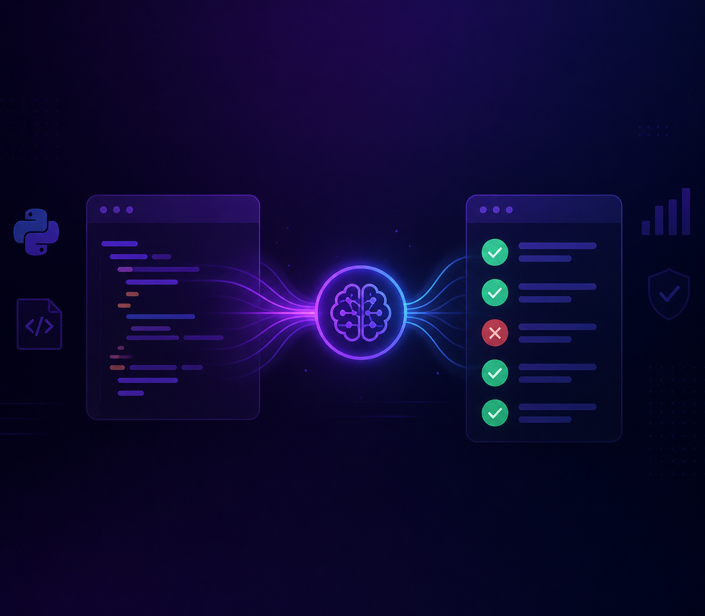

Skills
Skills, Languages & Technologies
A selection of languages, technologies and skills studied/used through out my career.
The confidence level written is estimated based on self-assessment
Featured Projects
Project Selection
Some of my projects developed through my journey into the I.T. field.

Architecture / Framework
GenTestsAI: a framework to automatically generate unit tests in Python (using LLMs)
Creation of a software artifact in pure Python, with SOLID paradigm, which allows the automatic generation of unit tests through the use of only LLMs.